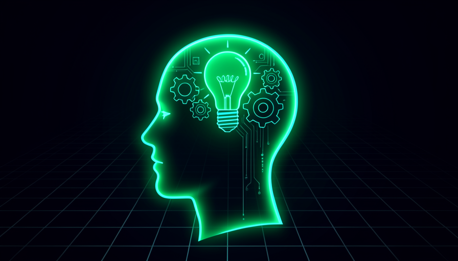
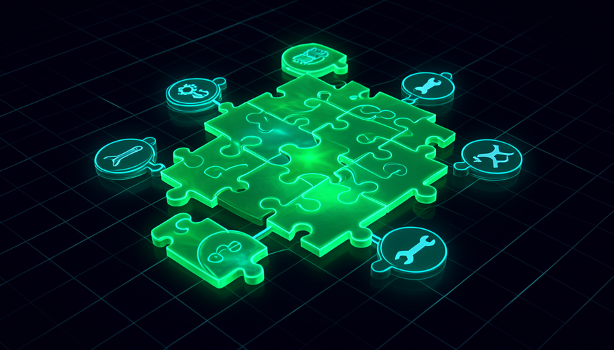
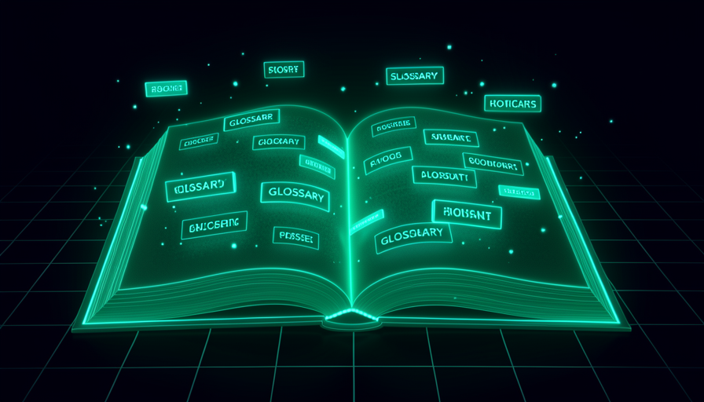
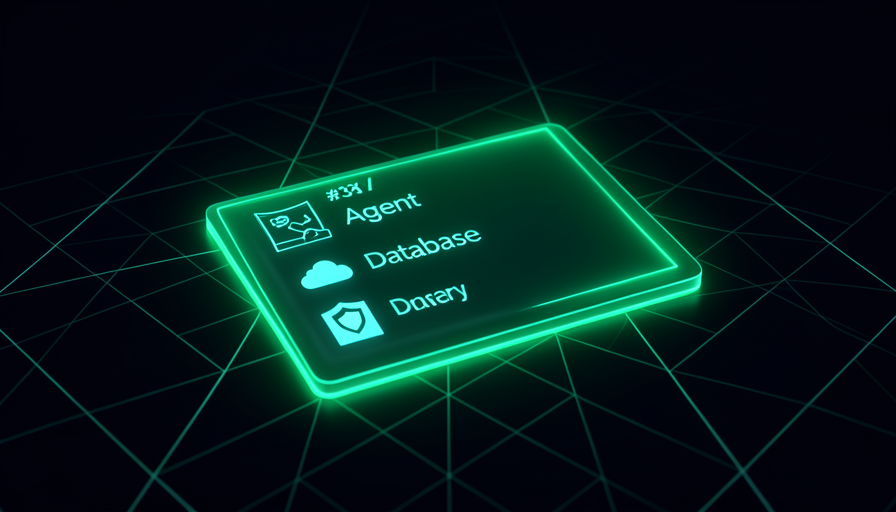

O caminho da trilha 1: da mentalidade ao mapa do ecossistema, terminando no glossário que ancora todo o resto do curso.
Mapa da trilha
Conteúdo detalhado

🧠 A Mentalidade do Vibe Coding
A virada de chave: construir descrevendo o resultado em linguagem natural. Determinismo vs não-determinismo, "trust but verify", iterar em camadas, a IA como ferramenta de aprendizado e quem faz o quê (você gerencia, a IA desenvolve).
Construir software e automações conversando com a IA em linguagem natural — você descreve o resultado, a IA cuida da implementação.
Remove o overhead técnico; foca no problema, não na mecânica de cada nó. Velocidade e iteração rápida.
Linguagem natural dirige o build; a IA faz o "trabalho pesado"; iterar é só pedir.
Dizer o que deve acontecer ("identifique perguntas técnicas") em vez de ditar o como ("use um nó IF com regex").
Deixa a IA escolher o melhor caminho; você não precisa conhecer os nós.
Outcome > instrução; especificar a saída; deixar a IA propor a estrutura.
A automação tradicional é previsível; a IA generativa é não-determinística — a mesma instrução pode gerar nomes, estrutura e layout diferentes.
Evita confundir variação normal com erro; você não compara tela a tela.
"Boring is beautiful" no tradicional; variação é esperada na IA; foque no resultado.
A IA comete erros — sempre teste o que foi criado e cheque a saída contra a expectativa, mesmo sem erro aparente.
Um workflow "verde" pode estar errado; verificar é parte do trabalho.
Confiar e verificar; green ≠ correto; testar como usuário real.
Evoluir em degraus (stair-step): uma melhoria por vez, testando após cada mudança.
Mudanças isoladas são fáceis de testar, reverter e diagnosticar.
Camadas; incremento; medir antes/depois; backup antes de mudar.
Pedir à IA que explique por que escolheu um nó ou configuração, para que o conhecimento fique.
Você sai de "set it and forget it" e ganha intuição sobre o sistema.
Perguntar o porquê; assistir o build cedo; aprender enquanto constrói.
Tratar a IA como um especialista: você define o objetivo e aprova; ela executa, como um desenvolvedor experiente.
A divisão de papéis evita microgerenciar e libera a IA para resolver.
Gerente vs desenvolvedor; delegar; feedback em vez de correção.

🧩 O Ecossistema: Como as Peças se Encaixam
O mapa do território: o assistente de código, o n8n (construtor visual), o MCP (ferramentas externas), skills & workflows, agentes e a diferença entre rodar local e hospedado.
O motor que transforma a sua conversa em ações: lê arquivos do projeto, escreve/edita código, roda comandos e conecta ferramentas via MCP.
É a peça central — entender o que ele faz (e não faz) orienta tudo.
Roda no editor; quatro capacidades; uma pasta por projeto.
Um construtor visual de workflows, baseado em nós, que conecta apps, dados, IA e APIs externas.
É onde as automações "vivem"; o assistente constrói nele por você.
Nós; gatilho → lógica → ação; visual e low/no-code.
O protocolo (Model Context Protocol) que expõe um conjunto de ferramentas externas para o agente usar sozinho.
É como a IA ganha "braços" — falar com n8n, raspar a web, ler bancos.
Uma conexão, muitas ferramentas; o agente decide quando usar cada uma.
Arquivos markdown com instruções reutilizáveis — uma "SOP" que o agente segue, chamável sob demanda.
Param de reexplicar tarefas; trazem consistência e economia de contexto.
Workflow = instrução; skill = workflow chamável; markdown.
Um sistema que raciocina, adapta e decide os passos sozinho a partir do resultado que você pediu.
É o salto do "wire tudo na mão" para o "diga o resultado".
Raciocina e adapta; descreve o resultado; não-determinístico.
Rodar na sua máquina (você dispara) vs rodar sozinho na nuvem (por agenda ou evento, sem você presente).
Define o arco do curso: começa local e termina em produção.
Disparo manual vs automático; escala; o "agentic gap".

📖 Glossário Essencial — Parte 1 (IA, Claude Code, n8n)
Sete clusters de termos definidos com exemplo concreto: conceitos de IA, modos do assistente, arquivos-chave, MCP, n8n básico, n8n com IA e dados (vector store, embeddings).
O vocabulário-base: LLM, prompt, system prompt, context window, token e context rot.
Sem esses termos, todo o resto vira jargão órfão.
Cada termo com exemplo concreto; janela de contexto; custo por token.
Os modos e comandos: plan mode, bypass permissions, permission modes, /clear e /compact.
Controlam quanto a IA faz sozinha e como você gerencia a sessão.
Planejar antes de agir; limpar vs compactar; equilíbrio velocidade/segurança.
Os arquivos que estruturam um projeto: CLAUDE.md, .env, .gitignore, .mcp.json e SKILL.md.
Saber o papel de cada um evita vazar segredo e perder configuração.
System prompt; segredos; o que sobe e o que não sobe pro repositório.
Os termos do MCP: o protocolo, o MCP server, a tool/ferramenta e a descoberta de servers.
É como você dá novas capacidades ao agente.
Protocolo; server; ferramenta; onde achar servers.
Os blocos do n8n: nó (node), trigger, workflow, credential e OAuth2.
Permite ler o que a IA construiu e conversar sobre ajustes.
Gatilho dispara o fluxo; credenciais conectam apps; OAuth2 autoriza.
Os nós de IA do n8n: AI agent node, text classifier, code node e IF node.
São as peças dos projetos práticos (suporte, classificação, ramos).
Classificar antes de agir; ramificar com IF; lógica custom no code node.
Os termos de dados/RAG: vector store, embeddings, document loader e text splitter.
São a base para a IA responder a partir dos seus documentos.
Indexar docs; buscar por significado; fatiar texto em pedaços.

📖 Glossário Essencial — Parte 2 (Agêntico, RAG, Deploy, Segurança)
A segunda metade do glossário: termos agênticos (WAT, loop de auto-melhoria, agentic gap), RAG, versionamento/cloud, execução hospedada, app/frontend e segurança & pagamento.
Os termos agênticos: agente, agêntico, WAT (Workflows/Agent/Tools), loop de auto-melhoria e agentic gap.
São a espinha dorsal das trilhas 2 e 4.
Decide sozinho; se auto-cura; o que falta em produção (gap).
RAG (geração aumentada por recuperação): knowledge base, retrieval e confidence score.
É como a IA responde a partir dos seus dados, sem inventar.
Buscar antes de responder; base de conhecimento; pontuar a confiança.
O básico de Git/cloud: GitHub, repo, commit, push e a gh CLI.
É onde o código mora na nuvem e de onde o deploy puxa.
Snapshot (commit); enviar (push); histórico/rollback.
Os termos de produção: Trigger.dev, cron, webhook, payload, dev vs prod, trace, retry e alert.
São o vocabulário da trilha 6 (hospedar e dar confiabilidade).
Agenda vs evento; trace = passo a passo; retry vs bug.
O modelo de app: frontend, backend, ciclo request/response, Vercel e env var.
Fundamento para construir interfaces que outras pessoas usam.
O que o usuário vê vs o servidor; pedido → resposta; segredo em env var.
Os termos de segurança/monetização: Supabase, RLS, migration, Stripe, checkout, price ID, webhook secret e freemium.
É o que transforma um app aberto e arriscado em um produto seguro e pago.
Isolar dados (RLS); migração de banco; checkout; modelo freemium.